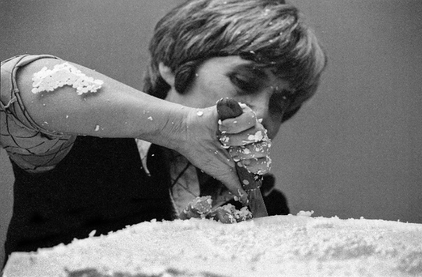

Maria Lai è stata una delle figure più rilevanti dell'arte contemporanea italiana. La sua formazione artistica ebbe inizio a Roma e Venezia, dove gli incontri con artisti del calibro di Marino Mazzacurati, Arturo Martini e Alberto Viani segnarono profondamente il suo percorso creativo. Frequentò il corso di scultura all'Accademia di Belle Arti di Venezia dal 1943 al 1945, dove consolidò la sua visione artistica.
Fin dalla giovane età, Maria mostrò un forte interesse per il disegno, crescendo tra le tradizioni della sua terra natale, che sarebbero poi diventate il cuore pulsante della sua arte. Dopo aver frequentato il Regio Istituto Magistrale Eleonora D'Arborea di Cagliari, si iscrisse al Liceo artistico Ripetta di Roma nel 1939. La sua prima personale si tenne a Roma nel 1957, segnando l'inizio di una carriera artistica che l'avrebbe vista esplorare nuove frontiere e influenze, dall'Arte Povera all'Informale negli anni '60.
Il linguaggio artistico di Lai è intimamente legato alla tradizione sarda. Utilizzando tecniche e materiali quotidiani come ceramiche, ricami e lavori di cucito, ha creato opere come i Telai, le Geografie e i Libri cuciti, caratterizzate da pagine di tessuto perforate e fili intrecciati. Il suo lavoro spesso rifletteva una profondità narrativa e una connessione con la sua terra d'origine, come nel caso della performance "Legarsi alla montagna" del 1981. In questa performance, un nastro azzurro di oltre dieci chilometri avvolse case e monti di Ulassai, coinvolgendo l'intera comunità in un evento unico di arte relazionale.

Negli anni '80, Lai si dedicò a interventi sul paesaggio, continuando a sviluppare il suo stile unico e innovativo. Le sue opere furono esposte in importanti esposizioni nazionali e internazionali, tra cui la Biennale di Venezia nel 1978, 2013 e 2017. La città di Ulassai è diventata un punto di riferimento per la sua arte, ospitando molte delle sue opere nel Museo di arte contemporanea Stazione dell'arte, creato nel 2006.
Negli ultimi anni della sua vita, Lai continuò a esplorare temi artistici integrando vari cicli delle sue opere. Vissero a Cardedu, dove continuò a lavorare fino alla fine. Dopo la sua morte, le sue opere continuarono a essere celebrate in retrospettive come "Ricucire il mondo" del 2014, allestita a Cagliari, Nuoro e Ulassai, e a Documenta 14 di Kassel nel 2017, a Roma nel 2018, a Nuoro nel 2021 e a Palma di Maiorca nel 2023.
La vita e l'arte di Maria Lai sono testimonianze di una profonda connessione con le radici culturali sarde, integrate con una visione artistica universale. Le sue opere, che continuano a essere esposte e celebrate in tutto il mondo, rappresentano un'eredità duratura che unisce tradizione e innovazione in modo unico e affascinante.